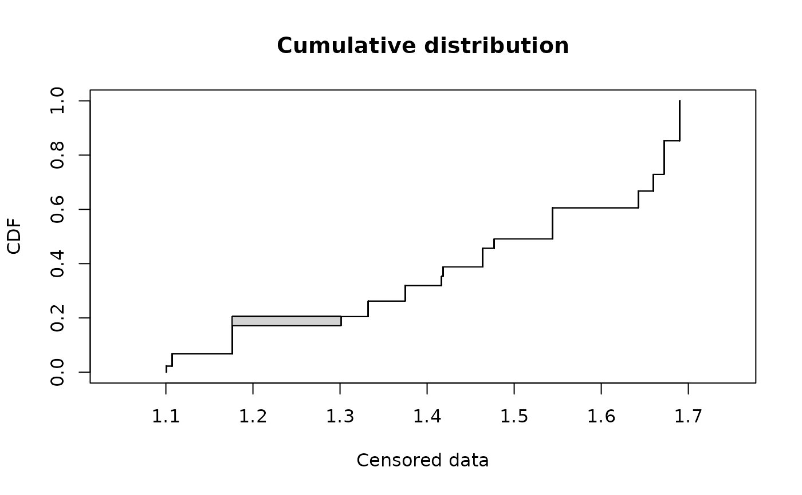
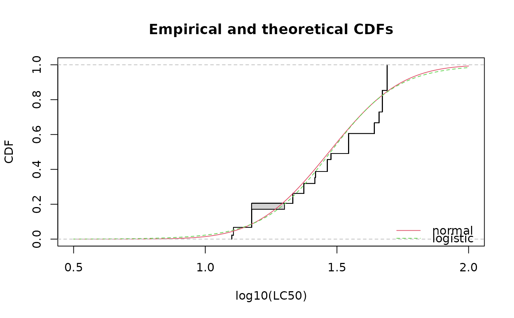

Species-Sensitivity Distribution (SSD) for salinity tolerance
salinity.Rd72-hour acute salinity tolerance (LC50 values) of riverine macro-invertebrates.
Usage
data(salinity)Format
salinity is a data frame with 2 columns named left and right, describing
each observed LC50 value (in electrical condutivity, millisiemens per centimeter) as an interval.
The left column contains either NA for left censored observations, the left bound of the interval
for interval censored observations, or the observed value for non-censored observations. The right
column contains either NA for right censored observations, the right bound of the interval
for interval censored observations, or the observed value for noncensored observations.
Source
Kefford, B.J., Nugegoda, D., Metzeling, L., Fields, E. 2006. Validating species sensitivity distributions using salinity tolerance of riverine macroinvertebrates in the southern Murray-darling Basin (Vitoria, Australia). Canadian Journal of Fisheries and Aquatic Science, 63, 1865-1877.
Examples
# (1) load of data
#
data(salinity)
# (2) plot of data using Turnbull cdf plot
#
log10LC50 <- log10(salinity)
plotdistcens(log10LC50)

# (3) fit of a normal and a logistic distribution to data in log10
# (classical distributions used for species sensitivity
# distributions, SSD, in ecotoxicology))
# and visual comparison of the fits using Turnbull cdf plot
#
fln <- fitdistcens(log10LC50, "norm")
summary(fln)
#> Fitting of the distribution ' norm ' By maximum likelihood on censored data
#> Parameters
#> estimate Std. Error
#> mean 1.4702582 0.02817044
#> sd 0.2154709 0.02369006
#> Loglikelihood: -61.79623 AIC: 127.5925 BIC: 132.9567
#> Correlation matrix:
#> mean sd
#> mean 1.0000000 0.2937484
#> sd 0.2937484 1.0000000
#>
fll <- fitdistcens(log10LC50, "logis")
summary(fll)
#> Fitting of the distribution ' logis ' By maximum likelihood on censored data
#> Parameters
#> estimate Std. Error
#> location 1.4761562 0.02822706
#> scale 0.1269994 0.01543956
#> Loglikelihood: -62.81293 AIC: 129.6259 BIC: 134.9901
#> Correlation matrix:
#> location scale
#> location 1.0000000 0.2024688
#> scale 0.2024688 1.0000000
#>
cdfcompcens(list(fln, fll),legendtext = c("normal", "logistic"),
xlab = "log10(LC50)", xlim = c(0.5, 2), lines01 = TRUE)

# (4) estimation of the 5 percent quantile value of
# the normal fitted distribution (5 percent hazardous concentration : HC5)
# with its two-sided 95 percent confidence interval calculated by
# non parametric bootstrap
# from a small number of bootstrap iterations to satisfy CRAN running times constraint.
# For practical applications, we recommend to use at least niter=501 or niter=1001.
#
# in log10(LC50)
bln <- bootdistcens(fln, niter = 101)
HC5ln <- quantile(bln, probs = 0.05)
# in LC50
10^(HC5ln$quantiles)
#> p=0.05
#> estimate 13.0569
10^(HC5ln$quantCI)
#> p=0.05
#> 2.5 % 11.08712
#> 97.5 % 15.50325
# (5) estimation of the HC5 value
# with its one-sided 95 percent confidence interval (type "greater")
#
# in log10(LC50)
HC5lnb <- quantile(bln, probs = 0.05, CI.type = "greater")
# in LC50
10^(HC5lnb$quantiles)
#> p=0.05
#> estimate 13.0569
10^(HC5lnb$quantCI)
#> p=0.05
#> 5 % 11.31157